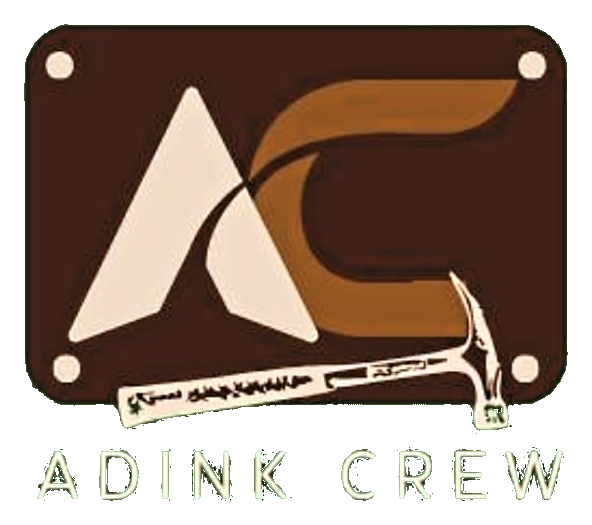

01
Interior Hunian
Inspirasi penataan ruang keluarga, kamar tidur, apartemen, dan area rumah agar terasa nyaman dan serasi.
Diskusikan kebutuhan ↗
ADINK CREWFURNITURE & INTERIORFURNITURE • INTERIOR • CUSTOM
Wujudkan ruang yang terasa lebih personal dengan solusi furniture dan interior yang selaras dengan kebutuhan, gaya, dan aktivitas Anda.
Kami percaya ruang yang baik bukan hanya enak dipandang, tetapi juga nyaman digunakan. ADINK CREW Furniture hadir untuk membantu Anda merencanakan kebutuhan furniture dan interior dengan pendekatan yang personal.
Kenali ADINK CREWDari sudut rumah yang nyaman hingga ruang usaha yang fungsional, mulai diskusikan kebutuhan Anda bersama kami.
Inspirasi penataan ruang keluarga, kamar tidur, apartemen, dan area rumah agar terasa nyaman dan serasi.
Diskusikan kebutuhan ↗Rencanakan kebutuhan kitchen set, lemari, meja, rak, dan furniture yang menyesuaikan ukuran serta fungsi ruang.
Diskusikan kebutuhan ↗Referensi penataan kantor, toko, kafe, dan ruang usaha dengan perhatian pada kenyamanan dan identitas bisnis.
Diskusikan kebutuhan ↗Ruang dan gambar pada website ini merupakan visual inspirasi, bukan dokumentasi proyek ADINK CREW Furniture.
Palet warna natural, tekstur kayu, dan bentuk sederhana sebagai titik awal untuk menemukan karakter ruang Anda.
ADINK CREW Furniture berbasis di Brebes, Jawa Tengah, dan terbuka untuk berdiskusi tentang kebutuhan furniture serta interior hunian maupun ruang usaha.
Setiap kebutuhan memiliki ukuran, fungsi, dan anggaran yang berbeda. Karena itu, langkah awal terbaik adalah berdiskusi agar kebutuhan dan ruang lingkup pekerjaan menjadi jelas.
Jelaskan jenis ruang, furniture yang dibutuhkan, ukuran, atau ide yang Anda miliki.
Bahas lokasi, material yang diinginkan, perkiraan anggaran, dan waktu pengerjaan.
Ruang lingkup, harga, jadwal, dan tahap pekerjaan dikonfirmasi sebelum pekerjaan disepakati.
Ceritakan rencana Anda kepada ADINK CREW Furniture. Mari mulai dengan diskusi tentang kebutuhan ruang dan furniture Anda.